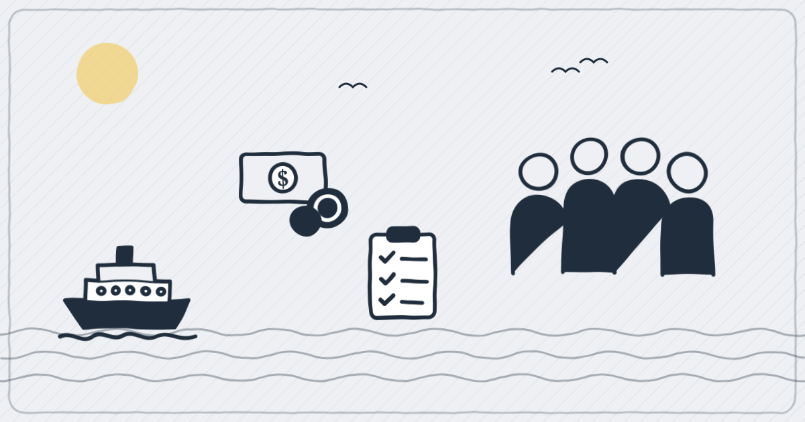

How Many Cabins Make a Group Cruise? The 8-Cabin Rule

On Royal Caribbean, Carnival, Celebrity, Holland America, MSC and most other big lines, eight cabins booked together is a group. That earns a held group rate, amenity points to spend on perks, and one free cruise fare for roughly every 15 or 16 paying guests. Norwegian and Viking start at five cabins.
Eight cabins is the number. Book eight cabins together on Royal Caribbean, Carnival, Celebrity, Holland America, MSC, Oceania or Virgin Voyages and the line treats you as a group: your fare is held rather than floating, you earn amenity points to spend on perks, and for roughly every 15 or 16 paying guests one cruise fare comes off the bill. Norwegian, Viking and Seabourn open a group at five cabins, and Princess counts ten people. At seven cabins on an eight-cabin line, you are a family reunion that booked separately.
How many cabins do you need for a group cruise rate?
Each line writes its own group policy, and the threshold is lower than most people expect. Here is where the common lines sailing from Canada and the US set it, at recent terms.
| Cruise line | Group starts at | Free fare earned |
|---|---|---|
| Royal Caribbean | 8 cabins and at least 16 guests | 1 fare per 16 full-fare guests |
| Carnival | 8 cabins | 1 fare per 15 full-fare guests |
| Celebrity | 8 cabins (no deposit) | 1 fare per 16 full-fare guests |
| Holland America | 8 cabins | 1 fare per 16 guests, better with points |
| MSC Cruises | 8 cabins | 1 fare per 15 full-fare guests |
| Norwegian | 5 cabins | 1 fare per 10 berths |
| Princess | 10 people | 1 fare per 16 full-fare guests |
| Virgin Voyages | 8 cabins | 1 Sea Terrace cabin per 10 cabins |
| Viking | 5 cabins | 1 cruise-only fare per 15 paid guests |
| Disney | Ask the group desk | Terms vary by sailing |
Policies are rewritten every season or two, so confirm the current terms for your line before anyone pays a deposit.
What is a tour conductor credit, and is it a free cabin?
The free fare is called a tour conductor credit, TC for short, and it is the perk everyone misunderstands. It is one cruise fare, not one cabin. Royal Caribbean, for example, gives one credit per 16 full-fare guests and assigns it to the cabin category that most of the group booked. Taxes, port fees and gratuities for that person are still owed, and the second person in the credit holder's cabin pays full fare.
Many groups split the credit across everyone's final payment rather than handing one person a free trip. Lines allow this; agree it in writing before the first deposit.
Is the group rate cheaper than the public price?
Often, but not always. A group rate is set the day the block opens and then protected, so it does not rise with demand the way everyday fares do. On a popular Alaska or school-holiday Caribbean week, that protection is worth real money.
It does not fall automatically either. If the line runs a sale six months later, the public price can slip under your held rate. Whoever manages the block can usually ask the group desk to reprice, or let individual cabins take the promotion instead, right up to final payment. Someone has to watch for it.
For a mixed Canadian and American group, settle which currency the block is priced in before the first deposit, because the gap between a CAD and a USD fare can be larger than the group discount. Our note on booking in Canadian dollars or US dollars walks through the comparison.
What are group amenity points and what do they buy?
Most big lines score each sailing with amenity points, sometimes called GAP, and a group spends them on perks. At recent terms Holland America gives four points on a 5 to 9 day cruise and six on Alaska and longer sailings, Royal Caribbean gives four points on groups of 16 or more cabins once the group deposit is paid, Princess offers up to six and Celebrity four. The menu looks similar everywhere:
- Onboard credit per cabin, typically US$25 to US$100 at recent values
- A private cocktail party for the group, usually on a sea day afternoon
- A bottle of wine or sparkling wine in each cabin
- Prepaid gratuities for a cabin or two
- A group photo, specialty dining for the organiser, or an upgraded internet package
Points are richest when a block opens early, often within weeks of the sailing going on sale, and shrink as the ship fills.
How does a group block actually work?
One person, or one travel agency, asks the line's group desk to hold a set of cabins at a group rate. That hold is the block. Each family books into it, picks its own cabin category and pays its own deposit and balance. Mixing insides, balconies and a suite is normal. Recent terms:
- Royal Caribbean: no group deposit for blocks up to 16 cabins; larger blocks pay US$50 a cabin within 30 days of opening.
- Carnival: US$25 a person within 60 days of opening, with the block held until second deposits are due, roughly four to five months before sailing.
- Holland America: no deposit up to 16 cabins, with the first review of unsold cabins about 150 days out.
- Norwegian: US$50 a cabin within 60 days, plus the normal per-person deposit within a week of each family booking.
- Princess and MSC: no deposit for the first 16 berths or cabins; larger groups pay a small per-person hold.
Cabins nobody has claimed are recalled by the line at set review dates, without penalty. You are not buying eight cabins, you are reserving the right to fill them.
What happens with seven cabins, or if someone drops out?
Seven cabins on an eight-cabin line means no free fare, but the block is still worth opening. Norwegian, Viking and Seabourn count five cabins as a group anyway, and on the eight-cabin lines a smaller block can often be held at a group rate while you recruit, with the full perks switching on if an eighth cabin joins before the final review date. Keep inviting people until that date.
The reverse hurts more. If a cabin cancels after final payment and the group drops from 16 paying guests to 14, the free fare is recalculated and can vanish, so the organiser suddenly owes a fare everyone thought was covered. Two defences: aim for nine or ten cabins rather than exactly eight, and have every cabin carry trip cancellation insurance so a dropout is paid for by the insurer. Canadians should read what cruise insurance covers and what OHIP does not before relying on a credit card policy.
If the line itself cancels the sailing, the whole group is refunded or rebooked under the same rules as any cancelled cruise, and the perks usually move to the new date if the block moves as one.
Should you open the block yourself or use an agent?
Group desks are built to deal with travel agents, and most of the work of a group is paperwork: tracking deposits, chasing review dates, asking for a reprice, requesting linked dinner tables. A licensed cruise consultant does that for the same fare you would pay the line directly, paid by the line's commission rather than by you. Doing it yourself works for eight cabins of close family who all book the same week. For a wedding, a 50th or a reunion where cousins trickle in over a year, an agent who owns the block earns their keep.
Want this checked for your own sailing? A licensed cruise consultant can price it up and answer questions for free, with no obligation.
Ask a cruise expert →Before you start counting cabins
Settle three things first: the sailing, so the block can open early while amenity points are rich; the currency, so Canadian and American relatives are not comparing different prices; and how the free fare will be shared. Then read our note on eating together as a group of 15 to 30, because the first question after booking is always whether you can all sit at one table.
Questions people also ask
How many people do you need for a group cruise discount?
Usually 16 people in 8 cabins, which is the threshold on Royal Caribbean, Carnival, Celebrity, Holland America, MSC and Virgin Voyages. Norwegian, Viking and Seabourn start at 5 cabins, and Princess counts 10 people rather than cabins. Below that you are individual bookings that happen to be travelling together.
Is the free berth on a group cruise a free cabin?
No. It is one person's cruise fare, usually the fare of the most-booked cabin category in the group, and taxes, port fees and gratuities still have to be paid for that person. Two people sharing a cabin still owe the second fare.
Do group cruise rates go down if prices drop?
Not automatically. A group rate is set when the block opens and generally stays put, which protects you from increases but means a later public sale can undercut it. Ask whoever holds the block to check whether the group can be repriced before final payment.